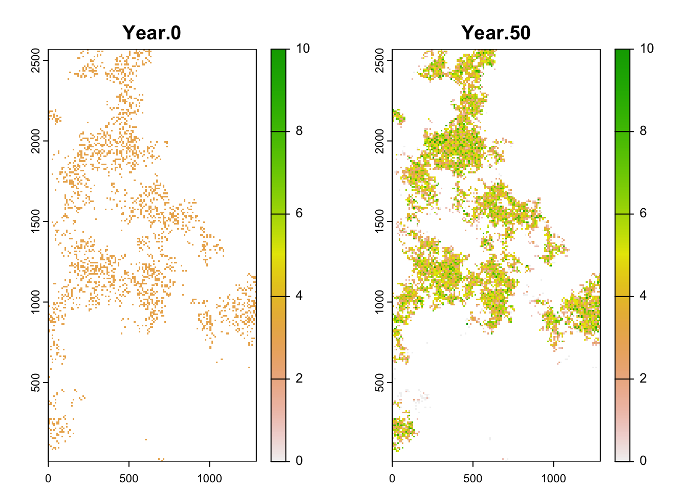

Getting started with RangeShiftR
RStudio project
Open the RStudio project that we created in the first session. I recommend to use this RStudio project for the entire course and within the RStudio project create separate R scripts for each session.
- Create a new empty R script by going to the tab “File”, select “New File” and then “R script”
- In the new R script, type
# Session 7: Getting started with RangeShiftRand save the file in your folder “scripts” within your project folder, e.g. as “7_RS_intro.R”

In the next three practicals, we are going to work with the individual-based modelling platform RangeShifter, which simulates population dynamics and dispersal behaviour on spatially explicit landscapes (G. Bocedi et al. 2014; Greta Bocedi et al. 2021). The platform provides functionality for a wide variety of modelling applications ranging from applied questions, where it can be parameterised for real landscapes and species to compare alternative potential management interventions, to purely theoretical studies of species’ eco-evolutionary dynamics and responses to different environmental pressures.

There are different software options available including a Windows
GUI and a command line version (Greta Bocedi et
al. 2021) as well as an R package (Malchow
et al. 2021). More information on the full functionality and
software can be found on the website https://rangeshifter.github.io. Here, we are going to
use the R package RangeShiftR and concentrate on the
processes demography and dispersal (and ignore evolution). Should you
wish to explore the R package in more depth than this course can cover,
please have a look at our more elaborate software
tutorials.
The RangeShiftR package source is publicly released on a
github
repository as a beta version (it is not available on
CRAN).
INSTALLING RangeShiftR
Please follow the installation guide here: https://rangeshifter.github.io/RangeshiftR-tutorials/installing.html
1 Introduction to RangeShiftR
In this overview, we quickly go through the main functionality of the RangeShiftR R-package in order to get a first overview of the basic structure. It is also meant for setting up the appropriate folder structures on your machine.
1.1
RangeShiftR workflow
Within the standard workflow of RangeShiftR, a simulation is defined by:
- a so-called parameter master object that contains the simulation modules, which represent the model structure, as well as the (numeric) values of all necessary simulation parameters, and
- the path to the working directory on the disc where the simulation inputs and outputs are stored.
The standard workflow of RangeShiftR is to load input maps from ASCII raster files and to write all simulation output into text files. Therefore, the specified working directory needs to have a certain folder structure: It should contain 3 sub-folders named ‘Inputs’, ‘Outputs’ and ‘Output_Maps’.
1.2 Running a first working example
Load the package by typing:
library(RangeShiftR)## RangeshiftR version 1.0.4 (10.05.2022)
## Copyright (C) 2020-2022 Anne-Kathleen Malchow, Greta Bocedi, Stephen C.F. Palmer, Justin M.J. Travis, Damaris Zurell
##
## This program is distributed in the hope that it will be useful, but WITHOUT ANY WARRANTY.
## You are welcome to redistribute it and/or modify it under certain conditions;
## type 'RangeShiftR_license()' for details.Create a parameter master object with all the default settings and store it:
s <- RSsim()Use your file explorer on your machine, navigate to the “models” folder within your project, and create a sub-folder for the current practical called “RS_GettingStarted”. Next, we go back to your RStudio project and store the path in a variable. This can either be the relative path from your R working directory or the absolute path.
dirpath = "models/RS_GettingStarted/"Create the RS folder structure, if it doesn’t yet exist:
dir.create(paste0(dirpath,"Inputs"), showWarnings = TRUE)
dir.create(paste0(dirpath,"Outputs"), showWarnings = TRUE)
dir.create(paste0(dirpath,"Output_Maps"), showWarnings = TRUE)With this, we are already set to run our first simulation by typing:
RunRS(s,dirpath)## Checking Control parameters
##
## Control Parameters checked
##
## Run Simulation(s) with random seed ...
##
## Running simulation nr. 1
##
## starting replicate 0
## RunModel(): completed initialisation
## starting year 0...
## starting year 1...
## starting year 2...
## starting year 3...
## starting year 10...
## starting year 20...
## starting year 30...
##
## starting replicate 1
## RunModel(): completed initialisation
## starting year 0...
## starting year 1...
## starting year 2...
## starting year 3...
## starting year 10...
## starting year 20...
## starting year 30...
##
## ***** Elapsed time: 2 seconds
##
## *****
## ***** Simulation completed
## ***** Outputs folder: /Users/zurell/data/Lehre/UP_Lehre/EEC/ConsBiogeogr/qcb-course/models/GettingStarted/Outputs/
## *****## $Errors
## [1] 0You should find the generated output - the simulation results as well as some log files - in the ‘Outputs’ folder.
2 Simulation modules
To look at the parameter master in more detail, simply type:
s## Batch # 1
##
## Simulation # 1
## -----------------
## Replicates = 2
## Years = 50
## Absorbing = FALSE
## File Outputs:
## Range, every 1 years
## Populations, every 1 years, starting year 0
##
## Artificial landscape: random structure, binary habitat/matrix code
## Size : 65 x 65 cells
## Resolution : 100 meters
## Proportion of suitable habitat: 0.5
## K or 1/b : 10
##
## Demography:
## Unstructured population:
## Rmax : 1.5
## bc : 1
## Reproduction Type : 0 (female only)
##
## Dispersal:
## Emigration:
## Emigration probabilities:
## [,1]
## [1,] 0
##
## Transfer:
## Dispersal Kernel
## Dispersal kernel traits:
## [,1]
## [1,] 100
## Constant mortality prob = 0
##
## Settlement:
## Settlement conditions:
## [,1]
## [1,] 0
## FindMate = FALSE
##
## Initialisation:
## InitType = 0 : Free initialisation
## of all suitable cells/patches.
## InitDens = 1 : At half K_or_DensDepIt contains of a number of parameter modules that each define different aspects of the RangeShifter simulation. Specifically, there are:
- Simulation
- Landscape
- Demography
- Dispersal
- Genetics
- Initialisation
Here is a schematic overview of the module constructors and their relations (Malchow et al. 2021):
RangeshiftR function overview
In the following, we go through some of the most relevant aspects of each module.
2.1 Simulation
This module is used to set general simulation parameters (e.g. simulation ID, number of replicates, and number of years to simulate) and to control output types (plus some more specific settings). For this overview, we will stick to the defaults:
sim <- Simulation(Simulation = 2,
Years = 50,
Replicates = 2,
OutIntPop = 50)For detailed information on this module (or any other), please see the documentation.
?Simulation2.2 Landscape
RangeShiftR can either import a map from an ASCII raster file in the ‘Inputs’ folder or generate a random map to use in the simulation.
For each option, there is a corresponding function to create a Landscape parameter object
land <- ImportedLandscape()
land <- ArtificialLandscape()Imported landscapes can provide either (binary or continuous) habitat suitability or land type codes. Furthermore, they can be either patch- or cell-based. We cover both types of landscapes in the remaining tutorials.
Artificially generated landscapes can only contain (binary or continuous) habitat suitability and are always cell-based.
For our example, we define an artificial landscape:
land <- ArtificialLandscape(Resolution = 10, # in meters
K_or_DensDep = 1500, # ~ 15 inds/cell
propSuit = 0.2,
dimX = 129, dimY = 257,
fractal = T, hurst = 0.3,
continuous = F)2.3 Demography
The Demography module contains all the local population dynamics of your simulated species. Generally there are two types:
- Unstructured model / non-overlapping generations
- Stage-structured model / overlapping generations
For the first case, create a simple Demography() module
(the maximum growth rate Rmax is the only required
parameter)
demo <- Demography(Rmax = 2.2, ReproductionType = 1, PropMales = 0.45)The option ReproductionType determines the way that
different sexes are considered:
0 = asexual / only female model
1 = simple sexual model
2 = sexual model with explicit mating system
In order to make a stage-structured model, we have to additionally create a stage-structure sub-module within the Demography module. Here, we have already defined a Demography object and can use ‘+’ to add the StageStructure sub-module.
stg <- StageStructure(Stages = 3,
TransMatrix = matrix(c(0,1,0,5.7,.5,.4,3.4,0,.9),nrow = 3),
FecDensDep = T,
SurvDensDep = T)
demo <- demo + stgAlternatively, we define the sub-module within the Demography module:
demo <- Demography(StageStruct = stg, ReproductionType = 1, PropMales = 0.45)RangeShiftR provides a number of useful functions to explore the model set-up. For example, we can plot the rates from the transition matrix:
plotProbs(stg)2.4 Dispersal
The dispersal process is modelled wih three sub-processes (see the
schematic figure above): Emigration(),
Transfer() and Settlement().
disp <- Dispersal(Emigration = Emigration(EmigProb = 0.2),
Transfer = DispersalKernel(Distances = 50),
Settlement = Settlement() )We can use the function plotProbs() to plot various
functional relationships, for example a dispersal kernel with a
stage-dependent mean transfer distance:
plotProbs(DispersalKernel(Distances = matrix(c(0,1,2,70,50,30),nrow = 3), StageDep = T))This is using mostly default options. For example, we can change the settlement condition so that a female individual, that arrives in an unsuitable cell, will wait for another time step and disperse again, while the males will die if arriving in an unsuitable cell:
disp <- disp + Settlement(SexDep = T,
Settle = matrix(c(0,1,1,0), nrow = 2))2.5 Initialisation
In order to control the initial distribution of individuals in the landscape at year 0, we set initialisation rules. We choose to initialise 3 individuals per habitat cell. Additionally, since we define a stage-structured model, we have to specify the initial proportion of stages:
init <- Initialise(FreeType = 0,
NrCells = 2250,
InitDens = 2,
IndsHaCell = 3,
PropStages = c(0,0.7,0.3))
init## Initialisation:
## InitType = 0 : Free initialisation
## of 2250 random suitable cells/patches.
## InitDens = 2 : 3 individuals per cell/hectare
## PropStages = 0 0.7 0.3
## InitAge = 2 : Quasi-equilibrium2.6 Parameter master
After all settings have been made in their respective modules, we are ready to combine them to a parameter master object, which is needed to run the simulation.
s <- RSsim(simul = sim, land = land, demog = demo, dispersal = disp, init = init)
# Alternative notation:
# s <- RSsim() + land + demo + disp + sim + init + geneWe can check the parameter master (or any single module) for potential parameter conflicts:
validateRSparams(s)## [1] TRUE2.7 Run the simulation
Once the parameter master has been defined, we can run the simulations in the specified RS directory.
RunRS(s, dirpath)3 Plot results
All results are stored in the Outputs folder. RangeShiftR provides some in-built functions to access and plot these results. Here, we plot the abundance and occupancy time series:
range_df <- readRange(s, dirpath)
# ...with replicates:
par(mfrow=c(1,2))
plotAbundance(range_df)
plotOccupancy(range_df)# ...with standard deviation:
par(mfrow=c(1,2))
plotAbundance(range_df, sd=T, replicates = F)
plotOccupancy(range_df, sd=T, replicates = F)Although RangeShiftR provides a number of functions for easy
post-processing and plotting of results, it may also be desirable to
further process the results yourself. As a simple example for such a
workflow, let’s plot the spatial distribution of abundance. For doing
so, we load the data from the population output files and process it
using the terra package:
# read population output file into a dataframe
pop_df <- readPop(s, dirpath)
# Make data frame with number of individuals per output year - for only one repetition (Rep==0):
pop_wide_rep0 <- reshape(subset(pop_df,Rep==0)[,c('Year','x','y','NInd')], timevar='Year', v.names=c('NInd'), idvar=c('x','y'), direction='wide')
head(pop_wide_rep0)## x y NInd.0 NInd.50
## 1 15 165 3 5
## 2 265 2505 3 3
## 3 425 2435 3 6
## 4 435 1855 3 6
## 5 155 1085 3 4
## 6 515 2335 3 6# use terra package to make a SpatRaster from the data frame
library(terra)
stack_years_rep0 <- terra::rast(pop_wide_rep0, type='xyz')
names(stack_years_rep0) <- c('Year.0', 'Year.50')
terra::plot(stack_years_rep0, range = c(0,10), type='continuous')